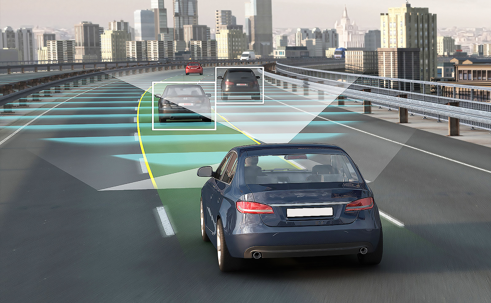
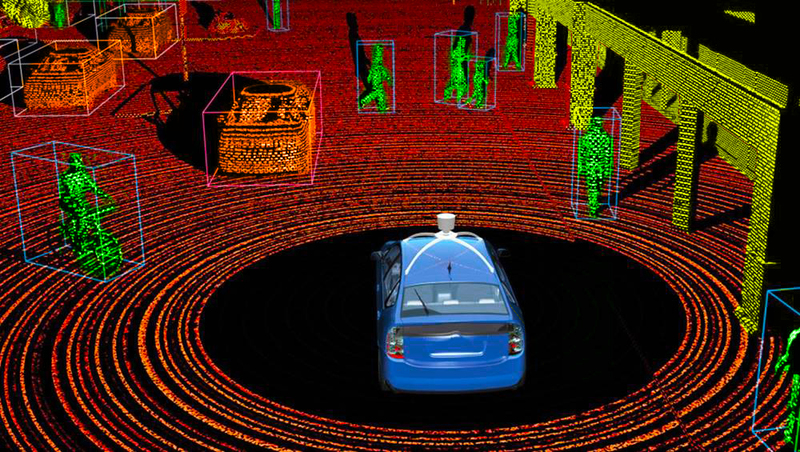
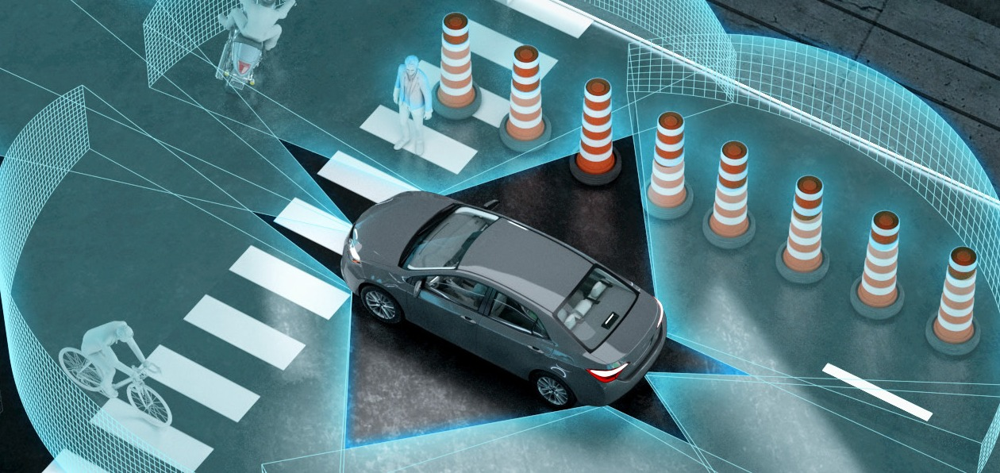
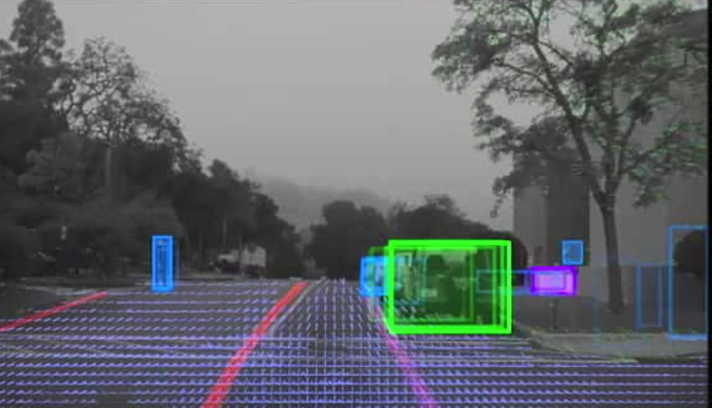
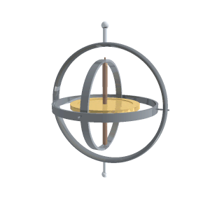
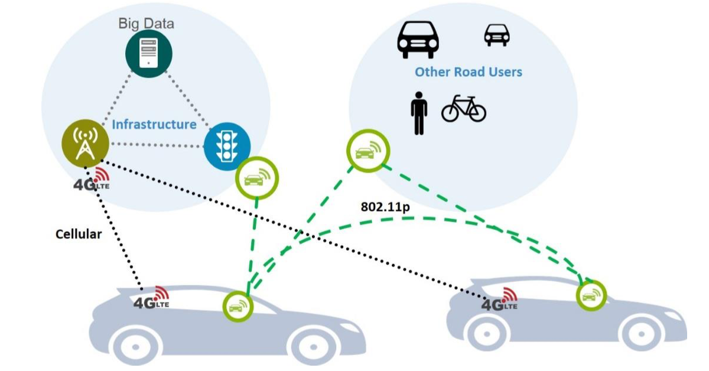

| Главная |
| Основные виды сенсоров: |
|---|
| Уровни автономности |
| Наше решение |
В данный момент существует множество датчиков и систем для локального позиционирования транспортного средства. Самые популярные из них это радары, лидары, сонары, камеры, акселерометры, гироскопы, v2x. Разберем особенности функционирования этих сенсоров и систем.
Радар - радиолокационный датчик, для обнаружения объектов в пространстве. Используется в автомобиле для определения расстояния до объекта, с целью его дальнейшего позиционирования и расчета скорости.
Лидар – локационный датчик, использующий маломощный лазер для обнаружения объектов, с целью создания карты окружающих объектов.
Сонары – это ультразвуковой датчик, который используется в автомобиле для определения объектов на небольшом расстоянии.
Камера используется для обработки визуальной информации. Для беспилотника это определение: сигналов светофоров, дорожных знаков, разметки. Также она нужна для классификации объектов, например: пешеходы, автомобили, здания и так далее.
Акселерометр - прибор, измеряющий проекцию ускорения из чего создает карту движения объекта и его скорость.
Гироскоп – прибор, регистрирующий горизонтальные ускорения.
V2x – система связи и информирования между автомобилями о различных внешних ситуациях на дороге, таких как светофоры, ямы и так далее.